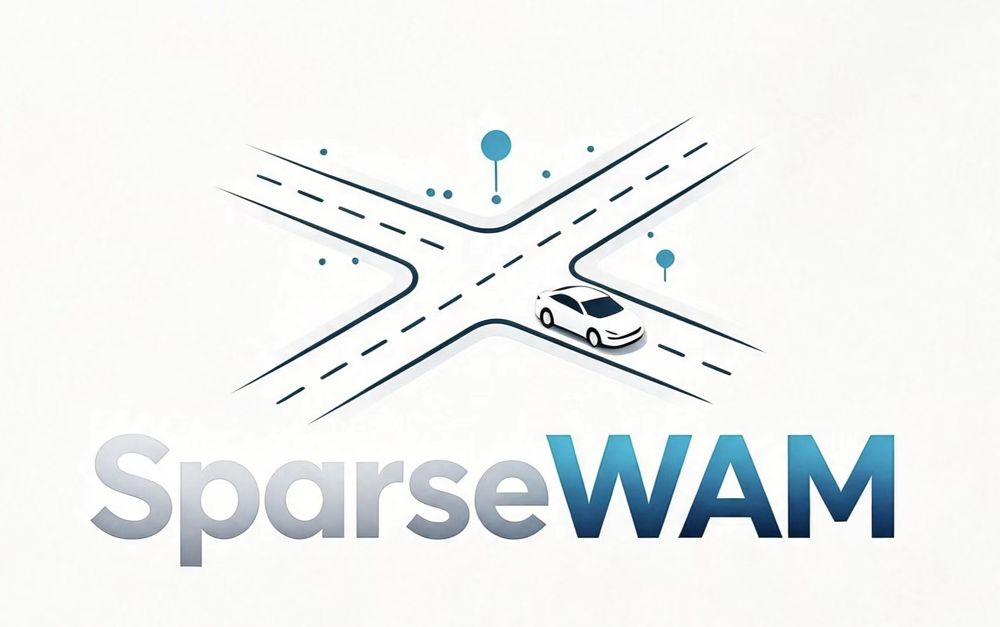
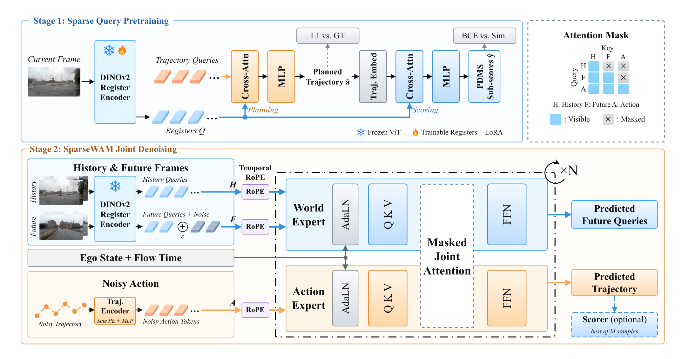
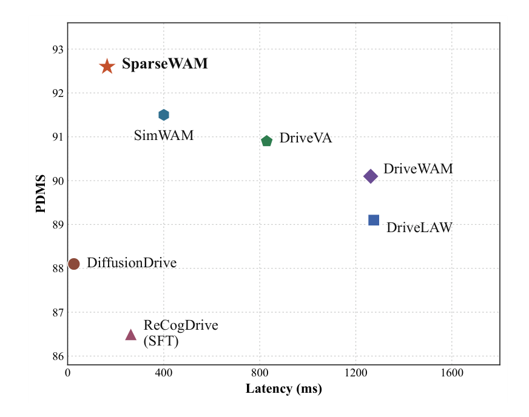
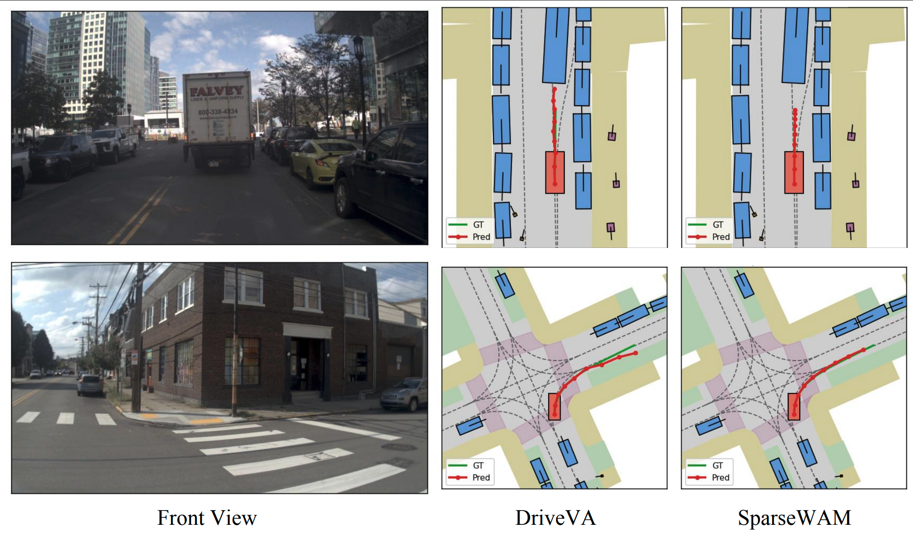

A frozen DINOv2 encoder plus learnable registers and LoRA turns one front-camera frame into 16 tokens. Planning and scoring pretraining push those tokens toward decision-relevant scene content.

SparseWAM
Driving world-action models are worth 16 register tokens.
SparseWAM forecasts the future scene and the ego trajectory in a register space of 16 tokens per frame, compressed from frozen DINOv2 and shaped by joint planning-and-scoring pretraining.
1AutoLab, School of Artificial Intelligence, Shanghai Jiao Tong University
2Guangzhou Zaofu Intelligent Technology Co., Ltd.
3The Hong Kong University of Science and Technology (Guangzhou)
*Work done at Guangzhou Zaofu Intelligent Technology Co., Ltd. †Corresponding authors.
92.6PDMS on NAVSIM v1
+1.7 over DriveVA
+1.7 over DriveVA
90.1EPDMS on NAVSIM v2
+1.5 over DriveLaW
+1.5 over DriveLaW
39.6EPDMS on NavHard
+9.0 over DriveLaW
+9.0 over DriveLaW
164 msMultimodal latency
about 1/5 of DriveVA
about 1/5 of DriveVA
01 — Method
Imagine in a decision-aligned space.
Dense video world-action models pay for future imagination with high latency. Variants that drop the world branch at deployment lose that imagination. SparseWAM keeps it, inside 16 registers per frame.
A Mixture-of-Transformers denoises future registers and the ego trajectory together. A causal mask stops future registers from seeing action tokens, while action tokens attend to the denoised future.
The compact space makes multimodal inference practical. A frozen front-camera QueryEncoder Scorer ranks the sampled trajectories.

02 — Efficiency
Future imagination at 164 ms.
Latency is measured on one NVIDIA H20 with batch size 1. Single inference scores 89.1 PDMS in 122 ms. Multimodal inference, using 64 sampled trajectories, reaches 92.6 PDMS in 164 ms.

Single inference
89.1
PDMS · 122 ms · 51.8M
Multimodal inference
92.6
PDMS · 164 ms · 57.9M
| Method | Test params | PDMS | Latency |
|---|---|---|---|
| DriveVA | 5.72B | 90.9 | 829 ms |
| SimWAM, no RL | 1.02B | 90.3 | 400 ms |
| SparseWAM, single | 51.8M | 89.1 | 122 ms |
| SparseWAM | 57.9M | 92.6 | 164 ms |
SparseWAM trains at 51.8M parameters. The scorer used for multimodal inference adds 6.1M at test time. SimWAM trains at 6.02B and deploys at 1.02B. Single inference is 3.3× faster than SimWAM and 6.8× faster than DriveVA, and still predicts the future at test time.
03 — Analysis
The gain comes from the imagined future.
The ablations below use single inference, so the scorer does not decide the ranking. Adding future prediction, then splitting the denoiser into a world expert and an action expert, lifts PDMS from 87.9 to 89.1.
| Variant | NC | DAC | EP | TTC | C | PDMS |
|---|---|---|---|---|---|---|
| Action only | 98.3 | 96.1 | 82.1 | 94.8 | 100.0 | 87.9 |
| + Future prediction | 98.6 | 96.4 | 82.5 | 95.3 | 100.0 | 88.5 |
| + MoT | 98.7 | 96.7 | 83.1 | 95.6 | 100.0 | 89.1 |
| Mask | NC | DAC | EP | TTC | C | PDMS |
|---|---|---|---|---|---|---|
| Isolated | 98.4 | 96.7 | 82.8 | 95.2 | 100.0 | 88.7 |
| Bidirectional | 98.5 | 96.6 | 82.8 | 95.2 | 100.0 | 88.7 |
| Causal | 98.7 | 96.7 | 83.1 | 95.6 | 100.0 | 89.1 |
| Representation | NC | DAC | EP | TTC | C | PDMS |
|---|---|---|---|---|---|---|
| DINOv2 patches | 98.2 | 96.2 | 82.4 | 94.1 | 100.0 | 87.8 |
| V-JEPA 2.1 | 98.1 | 96.3 | 82.3 | 94.2 | 100.0 | 87.8 |
| 16 registers | 98.7 | 96.7 | 83.1 | 95.6 | 100.0 | 89.1 |
Sensitivity to what matters
On counterfactual edits, only the 16-register space reacts more to planning-relevant changes than to weather and lighting. FBSR above 1 means that. The hairline marks 1.0.
16 registers1.41
DINOv20.43
V-JEPA 2.10.34
Wan2.2 VAE0.19
Tokens per frame: 16, 3936, 3024, and 756. Planning-edit sensitivity of the registers is 0.736, against 0.520 for appearance edits.
04 — Benchmarks
One front camera, three NAVSIM protocols.
Bold marks the best learned result in a column. NAVSIM v2 and NavHard are the paper numbers. The repository currently releases NAVSIM v1 training and evaluation.
With one front camera, SparseWAM reaches 92.6 PDMS, 1.7 above DriveVA, and raises ego progress by 3.1 while also improving no-collision.
| Method | Reference | Sensors | NC | DAC | EP | TTC | C | PDMS |
|---|---|---|---|---|---|---|---|---|
| Human Agent | – | – | 100.0 | 100.0 | 87.5 | 100.0 | 99.9 | 94.8 |
| Traditional end-to-end planners | ||||||||
| UniAD | CVPR 2023 | 6×C | 97.8 | 91.9 | 78.8 | 92.9 | 100.0 | 83.4 |
| TransFuser | TPAMI 2022 | 3×C+L | 97.7 | 92.8 | 79.2 | 92.8 | 100.0 | 84.0 |
| DiffusionDrive | CVPR 2025 | 3×C+L | 98.2 | 96.2 | 82.2 | 94.7 | 100.0 | 88.1 |
| WoTE | ICCV 2025 | 3×C+L | 98.5 | 96.8 | 81.9 | 94.9 | 99.9 | 88.3 |
| DiffusionDriveV2 | arXiv 2025 | 3×C+L | 98.3 | 97.9 | 87.5 | 94.8 | 99.9 | 91.2 |
| SparseDriveV2 | arXiv 2026 | 3×C | 98.5 | 98.4 | 88.6 | 95.0 | 99.9 | 92.0 |
| VLM-based planners | ||||||||
| OneDrive | arXiv 2026 | 1×C | 98.4 | 95.2 | 81.1 | 94.9 | 100.0 | 86.8 |
| ReCogDrive | ICLR 2026 | 1×C | 97.9 | 97.3 | 87.3 | 94.9 | 100.0 | 90.8 |
| AutoVLA | NeurIPS 2025 | 3×C | 98.4 | 95.6 | 81.9 | 98.0 | 99.9 | 89.1 |
| DriveVLA-W0 | ICLR 2026 | 1×C | 98.7 | 99.1 | 83.3 | 95.3 | 99.3 | 90.2 |
| SGDrive | CVPR 2026 | 1×C | 98.6 | 97.8 | 85.8 | 96.2 | 100.0 | 91.1 |
| ExploreVLA | ECCV 2026 | 1×C | 98.8 | 98.4 | 83.5 | 96.5 | 99.9 | 90.4 |
| World-model-based planners | ||||||||
| Epona | ICCV 2025 | 1×C | 97.9 | 95.1 | 80.4 | 93.8 | 99.9 | 86.2 |
| PWM | NeurIPS 2025 | 1×C | 98.6 | 95.9 | 81.8 | 95.4 | 100.0 | 88.1 |
| DriveLaW | CVPR 2026 | 1×C | 99.0 | 97.1 | 81.3 | 96.7 | 100.0 | 89.1 |
| DriveVA | ECCV 2026 | 1×C | 99.2 | 97.5 | 83.5 | 98.7 | 100.0 | 90.9 |
| SparseWAM | – | 1×C | 99.3 | 98.8 | 86.6 | 97.5 | 100.0 | 92.6 |
SparseWAM reaches 90.1 EPDMS, 1.5 above DriveLaW. An asterisk marks reinforcement learning.
| Method | Reference | NC | DAC | DDC | TLC | EP | TTC | LK | HC | EC | EPDMS |
|---|---|---|---|---|---|---|---|---|---|---|---|
| Human Agent | – | 100.0 | 100.0 | 99.8 | 100.0 | 87.4 | 100.0 | 100.0 | 98.1 | 90.1 | 90.3 |
| Traditional end-to-end planners | |||||||||||
| TransFuser | TPAMI 2022 | 96.9 | 89.9 | 97.8 | 99.7 | 87.1 | 95.4 | 92.7 | 98.3 | 87.2 | 76.7 |
| DiffusionDrive | CVPR 2025 | 98.2 | 95.9 | 99.4 | 99.8 | 87.5 | 97.3 | 96.8 | 98.3 | 87.7 | 84.5 |
| VLM-based planners | |||||||||||
| ReCogDrive* | ICLR 2026 | 98.3 | 95.2 | 99.5 | 99.8 | 87.1 | 97.5 | 96.6 | 98.3 | 86.5 | 83.6 |
| SGDrive | CVPR 2026 | 98.6 | 94.3 | 99.5 | 99.9 | 86.0 | 97.9 | 96.1 | 98.3 | 85.9 | 86.2 |
| DriveFine* | arXiv 2026 | 98.7 | 97.3 | 99.5 | 99.8 | 88.7 | 97.8 | 97.7 | 98.4 | 83.8 | 89.7 |
| World-model-based planners | |||||||||||
| DriveVLA-W0 | ICLR 2026 | 98.5 | 99.1 | 98.0 | 99.7 | 86.4 | 98.1 | 93.2 | 97.9 | 58.9 | 86.1 |
| DriveLaW | CVPR 2026 | 98.7 | 96.9 | 99.6 | 99.8 | 87.5 | 98.3 | 97.6 | 98.4 | 77.4 | 88.6 |
| SparseWAM | – | 98.8 | 98.8 | 99.5 | 99.7 | 89.0 | 98.8 | 96.8 | 98.3 | 72.8 | 90.1 |
SparseWAM reaches 39.6 EPDMS, 9.0 above DriveLaW, under the official two-stage pseudo closed-loop protocol. S1 and S2 are the two stages. EPDMS is the overall score.
| Method | Reference | Stage | NC | DAC | DDC | TLC | EP | TTC | LK | HC | EC | EPDMS |
|---|---|---|---|---|---|---|---|---|---|---|---|---|
| Traditional end-to-end planners | ||||||||||||
| TransFuser | TPAMI 2022 | S1 | 96.2 | 79.5 | 99.1 | 99.5 | 84.1 | 95.1 | 94.2 | 97.5 | 79.1 | |
| S2 | 77.7 | 70.2 | 84.2 | 98.0 | 85.1 | 75.6 | 45.4 | 95.7 | 75.9 | 23.1 | ||
| DiffusionDrive | CVPR 2025 | S1 | 96.8 | 86.0 | 98.8 | 99.3 | 84.0 | 95.8 | 96.7 | 97.6 | 79.6 | |
| S2 | 80.1 | 72.8 | 84.4 | 98.4 | 85.9 | 76.6 | 46.4 | 96.3 | 72.8 | 27.5 | ||
| VLM-based planners | ||||||||||||
| SGDrive | CVPR 2026 | S1 | 95.8 | 87.6 | 97.8 | 99.8 | 84.4 | 94.7 | 92.9 | 97.8 | 28.9 | |
| S2 | 79.4 | 65.4 | 79.1 | 98.9 | 88.9 | 75.3 | 42.7 | 96.4 | 29.6 | 25.5 | ||
| ReCogDrive | ICLR 2026 | S1 | 96.4 | 78.9 | 98.7 | 99.8 | 82.6 | 95.6 | 94.4 | 97.6 | 74.2 | |
| S2 | 80.2 | 65.0 | 82.4 | 98.7 | 85.2 | 76.9 | 43.8 | 96.6 | 71.8 | 25.7 | ||
| DriveFine | arXiv 2026 | S1 | 97.6 | 90.0 | 99.1 | 99.3 | 84.9 | 96.7 | 97.3 | 97.6 | 72.0 | |
| S2 | 82.1 | 71.3 | 84.8 | 98.4 | 88.1 | 74.3 | 47.2 | 96.8 | 72.8 | 30.5 | ||
| World-model-based planners | ||||||||||||
| DriveVLA-W0 | ICLR 2026 | S1 | 96.8 | 83.3 | 99.0 | 99.6 | 84.6 | 95.3 | 96.4 | 97.6 | 78.2 | |
| S2 | 76.8 | 64.3 | 79.9 | 98.3 | 89.2 | 75.0 | 46.8 | 95.8 | 53.1 | 24.4 | ||
| DriveLaW | CVPR 2026 | S1 | 97.3 | 89.1 | 99.2 | 99.6 | 84.3 | 97.1 | 96.2 | 97.8 | 67.6 | |
| S2 | 82.5 | 67.6 | 83.5 | 98.1 | 84.8 | 78.5 | 45.8 | 96.4 | 57.3 | 30.6 | ||
| SparseWAM | – | S1 | 98.1 | 94.9 | 99.1 | 100.0 | 83.0 | 98.0 | 96.0 | 97.8 | 52.4 | |
| S2 | 83.0 | 84.0 | 87.1 | 99.2 | 84.4 | 79.1 | 45.9 | 96.4 | 64.9 | 39.6 | ||
05 — Examples
Brake for the truck. Stay on the road.
